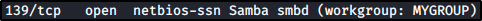
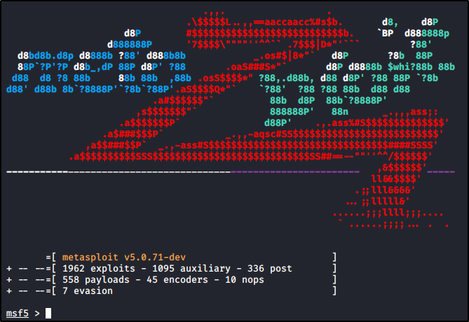
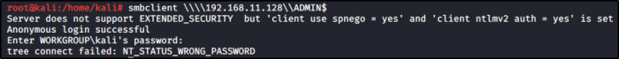

Enumerating SMB
SMB:
File Share protocol



Metasploit (msfconsole):


Type “search smb” to look for SMB modules to use:
Auxiliary modules are used to get info


Type the “use" command with module to use it and the “info” command to know more about the module


With the “options” command simply display the modules options


Use the “set” command to set up options and “run” to execute the module


SMBClient:
Command that allow you to connect at your SMB Server (anon way)
With “'-L" option, we ask for directory listing (we need the \\\\IP_OR_DOMAIN\\ or \\IP_OR_DOMAIN syntax)
If asked for a password, just press Enter (no password)


From here, we can choose IPC$ or ADMIN$ Sharename:
With no password, in ADMIN$, we get NT_STATUS_WRONG_PASSWORD (Wrong Password)
With no password, in IPC$, we actually log in but we can't get more info wit ls!!!
